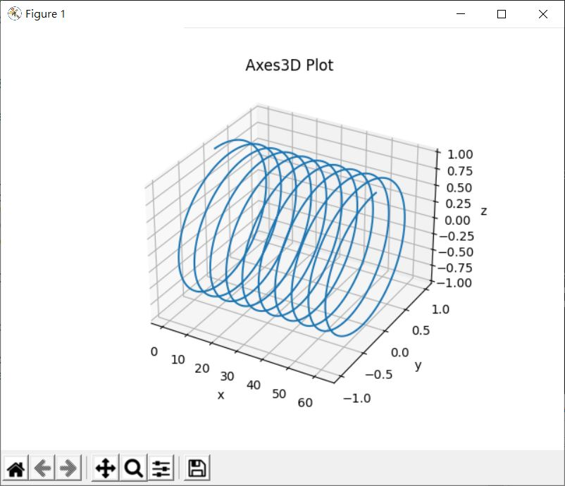
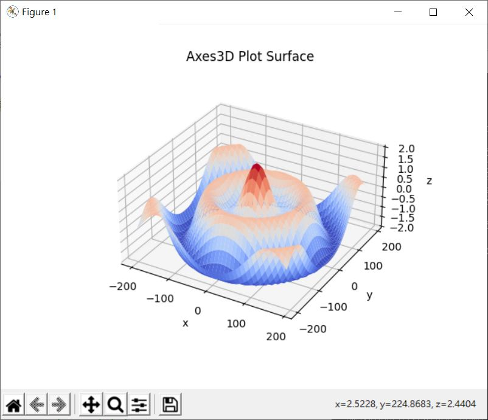
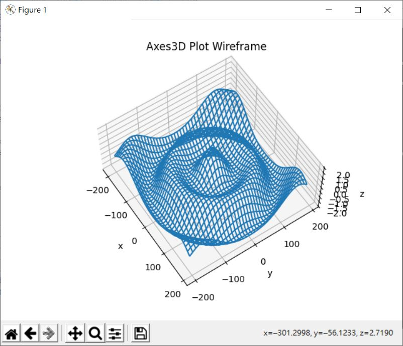
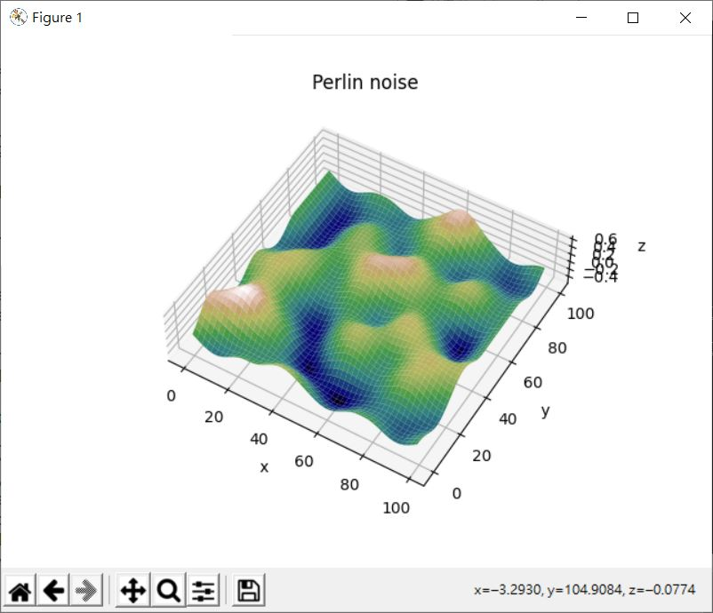

如果想將資料以立體方式呈現，可以透過 mpl_toolkits.mplot3d 模組，例如，來畫個立體螺旋圖：
import numpy as np
import matplotlib.pyplot as plt
start = 0
end = np.pi * 20
step = np.pi / 180
x = np.arange(start, end, step)
y = np.sin(x)
z = np.cos(x)
# 取得 mpl_toolkits.mplot3d.axes3d.Axes3D 實例
ax = plt.axes(projection='3d')
ax.set_xlabel('x')
ax.set_ylabel('y')
ax.set_zlabel('z')
ax.plot(x, y, z)
plt.title('Axes3D Plot')
plt.show()
透過 plt.axes(projection='3d') 可以取得 Axes3D 實例，另一個方式是自行建立：
import matplotlib.pyplot as plt
from mpl_toolkits.mplot3d.axes3d import Axes3D
fig = plt.gcf()
ax = Axes3D(fig)
如果只是要畫線圖，透過 Axes3D 實例的 plot 方法，指定 x、y、z 就可以了，這會顯示以下的圖形：

如果想繪製曲面圖，可以透過 plot_surface 方法，例如：
import numpy as np
import matplotlib.pyplot as plt
from matplotlib import cm
def f(x, y):
n = np.sqrt(np.power(x, 2) + np.power(y, 2)) / 180 * np.pi
return np.cos(n) + np.cos(3 * n)
width = 200
step = 10
x = np.arange(-width, width, step)
y = np.arange(-width, width, step)
X, Y = np.meshgrid(x, y)
Z = f(X, Y)
ax = plt.axes(projection='3d')
ax.plot_surface(X, Y, Z, cmap = cm.coolwarm)
ax.set_xlabel('x')
ax.set_ylabel('y')
ax.set_zlabel('z')
ax.set_box_aspect((1, 1, 0.5))
plt.title('Axes3D Plot Surface')
plt.show()
plot_surface 預設並不分層著色，這邊指定了 cm.coolwarm，值高的部份會是代表熱度的紅色，值低的部份會是藍色，預設的圖形在三個軸是 1:1:1，也就是會以正立方體來繪製，這會讓這個函式圖的 z 軸顯得過於突冗，可以透過 set_box_aspect 來調整比例，執行後的圖形如下：

如果只畫線框圖，可以透過 plot_wireframe，例如，將範例中的 ax.plot_surface(X, Y, Z, cmap = cm.coolwarm) 改為 ax.plot_wireframe(X, Y, Z)，會出現以下的圖形：

在〈Matplotlib 圖片、等值輪廓線〉談過，二維 Perlin 雜訊可以用來當成起伏的地形的計算基礎，來看看若將二維 Perlin 雜訊畫為曲面的話，會是什麼樣貌：
from math import floor
import numpy as np
import matplotlib.pyplot as plt
from matplotlib import cm
def blending(t):
return 6 * (t ** 5) - 15 * (t ** 4) + 10 * (t ** 3)
def lerp(g1, g2, t):
return g1 + t * (g2 - g1)
def grad2(hashvalue, dx, dy):
return [dy, dx + dy, dx, dx - dy, -dy, -dx - dy, -dx, -dx + dy][hashvalue % 8];
rand_table = np.random.randint(255, size = 256).tolist()
def _perlin2(x, y):
xi = floor(x)
yi = floor(y)
aa = rand_table[
(rand_table[xi % 256] + yi) % 256
]
ba = rand_table[
(rand_table[(xi + 1) % 256] + yi) % 256
]
ab = rand_table[
(rand_table[xi % 256] + yi + 1) % 256
]
bb = rand_table[
(rand_table[(xi + 1) % 256] + yi + 1) % 256
]
dx = x - xi
dy = y - yi
u = blending(dx)
v = blending(dy)
g1 = lerp(grad2(aa, dx, dy), grad2(ba, dx - 1, dy), u)
g2 = lerp(grad2(ab, dx, dy - 1), grad2(bb, dx - 1, dy - 1), u)
return lerp(g1, g2, v)
_perlin2 = np.frompyfunc(_perlin2, 2, 1)
def perlin2(x, y):
cx, cy = np.meshgrid(x, y)
return _perlin2(cx, cy).astype(np.float)
width = 100
x = np.arange(width)
y = np.arange(width)
X, Y = np.meshgrid(x, y)
Z = perlin2(x / 25, y / 25)
ax = plt.axes(projection='3d')
ax.plot_surface(X, Y, Z, cmap = cm.gist_earth) # 用地形高度顏色來著色
ax.set_xlabel('x')
ax.set_ylabel('y')
ax.set_zlabel('z')
ax.set_box_aspect((1, 1, 25 / width))
plt.title('Perlin noise')
plt.show()
結果會如下：

可以畫的圖案還有很多種，想知道有哪些以及怎麼畫，最好的方式就是搜尋一下「axes3d」，看看有沒有你想要的圖案效果，然後察看有沒有範例可以參考。